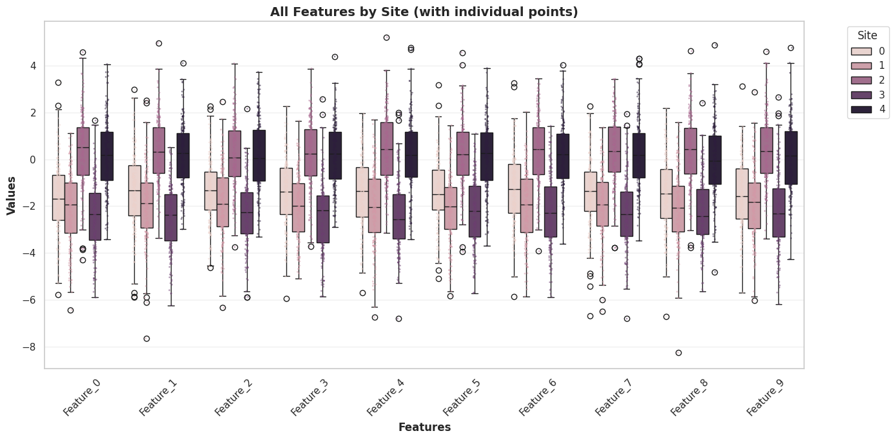

Characterize a multisite problem using UniHarmony#
The first step before applying any harmonization technique is to understand and characterize our data#
# Imports
import matplotlib.pyplot as plt
import seaborn as sns
from uniharmony import verbosity
from uniharmony.datasets import make_multisite_classification
from uniharmony.datasets._multisite_data_characterization import (
get_site_data_statistics,
print_statistics_summary,
)
from uniharmony.plot import plot_features_by_site
sns.set_theme(style="whitegrid")
verbosity("warning")
---------------------------------------------------------------------------
ImportError Traceback (most recent call last)
Cell In[1], line 7
3 import seaborn as sns
4
5 from uniharmony import verbosity
6 from uniharmony.datasets import make_multisite_classification
----> 7 from uniharmony.datasets._multisite_data_characterization import (
8 get_site_data_statistics,
9 print_statistics_summary,
10 )
ImportError: cannot import name 'get_site_data_statistics' from 'uniharmony.datasets._multisite_data_characterization' (/home/runner/work/UniHarmony/UniHarmony/src/uniharmony/datasets/_multisite_data_characterization.py)
Let’s use the multisite data generator to simulate some data#
print("Generating example data...")
X, y, sites = make_multisite_classification(
n_sites=5,
n_samples=1000,
n_features=10,
n_classes=3,
random_state=42,
)
print("\n" + "=" * 60)
Generating example data...
============================================================
Now lets compute some statistics#
print("Computing statistics...")
print("=" * 60)
# Compute statistics
stats = get_site_data_statistics(
X=X,
y=y,
sites=sites,
feature_names=[f"feat_{i}" for i in range(X.shape[1])],
)
verbosity("info")
# Print summary
print_statistics_summary(stats)
verbosity("warning")
Computing statistics...
============================================================
2026-04-20 21:23:39 [info ] ============================================================
2026-04-20 21:23:39 [info ] DATASET STATISTICS SUMMARY
2026-04-20 21:23:39 [info ] ============================================================
2026-04-20 21:23:39 [info ]
OVERALL:
2026-04-20 21:23:39 [info ] Samples: 1000
2026-04-20 21:23:39 [info ] Features: 10
2026-04-20 21:23:39 [info ] Sites: 5
2026-04-20 21:23:39 [info ] Classes: 3
2026-04-20 21:23:39 [info ]
CLASS DISTRIBUTION:
2026-04-20 21:23:39 [info ] class_0: 344 samples (34.4%)
2026-04-20 21:23:39 [info ] class_1: 336 samples (33.6%)
2026-04-20 21:23:39 [info ] class_2: 320 samples (32.0%)
2026-04-20 21:23:39 [info ]
SITE DISTRIBUTION:
2026-04-20 21:23:39 [info ] site_0: 200 samples (20.0%)
2026-04-20 21:23:39 [info ] site_1: 200 samples (20.0%)
2026-04-20 21:23:39 [info ] site_2: 200 samples (20.0%)
2026-04-20 21:23:39 [info ] site_3: 200 samples (20.0%)
2026-04-20 21:23:39 [info ] site_4: 200 samples (20.0%)
2026-04-20 21:23:39 [info ]
SITE STATISTICS (summary):
2026-04-20 21:23:39 [info ] site_0:
2026-04-20 21:23:39 [info ] Samples: 200
2026-04-20 21:23:39 [info ] Class distribution: {'class_0': 64, 'class_1': 70, 'class_2': 66}
2026-04-20 21:23:39 [info ] site_1:
2026-04-20 21:23:39 [info ] Samples: 200
2026-04-20 21:23:39 [info ] Class distribution: {'class_0': 86, 'class_1': 61, 'class_2': 53}
2026-04-20 21:23:39 [info ] site_2:
2026-04-20 21:23:39 [info ] Samples: 200
2026-04-20 21:23:39 [info ] Class distribution: {'class_0': 77, 'class_1': 65, 'class_2': 58}
2026-04-20 21:23:39 [info ] site_3:
2026-04-20 21:23:39 [info ] Samples: 200
2026-04-20 21:23:39 [info ] Class distribution: {'class_0': 59, 'class_1': 74, 'class_2': 67}
2026-04-20 21:23:39 [info ] site_4:
2026-04-20 21:23:39 [info ] Samples: 200
2026-04-20 21:23:39 [info ] Class distribution: {'class_0': 58, 'class_1': 66, 'class_2': 76}
2026-04-20 21:23:39 [info ]
FEATURE STATISTICS (first 5 features):
2026-04-20 21:23:39 [info ] feat_0: mean=-1.1451, std=1.9152, MAD=1.3194
2026-04-20 21:23:39 [info ] feat_1: mean=-1.0514, std=1.8368, MAD=1.2526
2026-04-20 21:23:39 [info ] feat_2: mean=-1.0355, std=1.7620, MAD=1.1633
2026-04-20 21:23:39 [info ] feat_3: mean=-1.0983, std=1.8031, MAD=1.2254
2026-04-20 21:23:39 [info ] feat_4: mean=-1.0368, std=1.9083, MAD=1.3964
2026-04-20 21:23:39 [info ]
CORRELATIONS:
2026-04-20 21:23:39 [info ] Average Inter-Site Correlation: 0.0372
2026-04-20 21:23:39 [info ] ============================================================
# Same plot individual points overlay
fig2, ax2 = plot_features_by_site(
X,
sites,
figsize=(14, 7),
rotation=45,
show_points=True,
title="All Features by Site (with individual points)",
)
plt.show()
